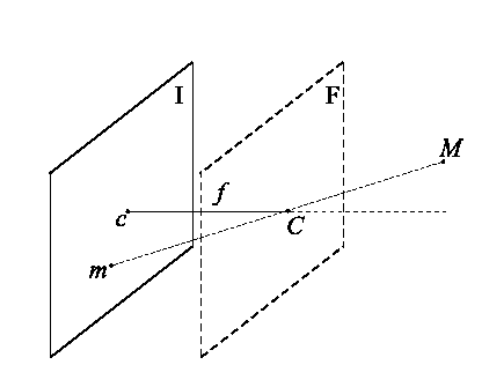
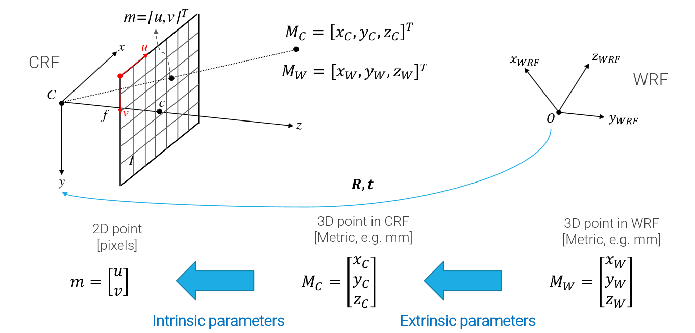

It is the geometric model of the image formation in a pinhole camera.
It composed by:
M: scene point
m: corresponding image point
I: image plane
C: optical center of the pinhole (the line through C and ortogonal to I is called Optical axis)
c: the intersection between the optical axis and the image plane (also image center or piercing point)
f: focal length
F: focal plane

We want to find the relationship between the 3d real plane to its 2d representation.
With u,v as the horizontal and vertical axis of the 2d plane and X,Y the corresponding on the 3d plane, we have:
xuuyvv=−zf⇒=−xzf=−zf⇒=−yzf
The - mirror the image so, in order to transform it, we can get rid of it.
Properties
The furthest the objects are from the camera, the smallest they will appear. We can compute the new dimension (or get the original one) with the formula:
l=Lzf
Where L is the original length of the segment we want to know the new dimension, f is the focal length and z is the distance from the optical center. This formula assumes the segment L is lying on the horizontal axis because ratios of length are not preserved unless the scene is parallel to the camera.
A more realistic approach
Basic Idea: map the real 3D coordinate system in an inner 3D representation of the world and then in a 2D system.

We call the parameters that translate the real world coordinates in the inner ones "Extrinsic" parameters and the ones from the inner representation to the 2D one "Intrinsic" parameters.
Image pixalization
We can account for the digitalization process by use the pixel size ΔuandΔv along the two axis.
u=Δu1Zcfxcv=Δv1Zcfyc
With ΔuandΔv being the horizontal and vertical pixel size in mm.
We also need to model the translation of the piercing point wrt the origin of the image coordinate system (center of the image -> top left corner of the image).
u=Δu1Zcfxc+u0v=Δv1Zcfyc+v0
Often, we can find Δuf and Δvf written as fu and fv respectevly. So, in the end, there are 4 intrinsic parameters. fu,fv,u0andv0.
From WRF to CRF
3D coordinates are measured into a World Reference Frame (WRF) external to the camera, related to the CRF by a Roto-Translation (rotation + translation)
Mc=xcyczc=RMW+t=r11r21r31r12r22r32r13r23r33XWYWZW+t1t2t3
The rotation is handled by a Rotation matrix
.
The center of the new reference system is: 0=RCW+t⇒RCW=−t⇒Cw=−RTt.
The rotation matrix has 9 entries, but it has only 3 independent parameters, which correspond to the rotation angles around the axes of the Reference Frame, the t matrix has also 3 parameters => there are 6 extrinsic parameters.
==>
Combining the transformations
We can combine the transformations from WRT to CRF and from CRF to 2D into a singular operation:
{u=fur31xw+r32yw+r33zw+t3r11xw+r12yw+r13zw+t1+u0v=fvr31xw+r32yw+r33zw+t3r21xw+r22yw+r23zw+t2+v0
But this model is non-linear.
In order to linearize it, we can insert a "dummy" parameter that transform the 2D point in a homogeneous 3D space ([uv]≡uv1≡kukvk):
[uv]≡kukvk≡fu000fv0U0v01000xcyczc1≡PintM~C≡[A∣0]M~c
The 3x3 matrix leftmost part of Pint is called the intrinsic parameter matrix. It is usually referred to as A or K, and it models the characteristics of the image sensing device. It is always an upper-right triangular matrix. A more general model would include a 5th parameter, known as skew, to account for possible non-orthogonality between the axes of the image sensor, but is usually 0 in practice.
We can rewrite the model as:
M~c≡xcyczc1≡[R0t1]M~w≡r11r21r310r12r22r320r13r23r330t1t2t31xWyWzW1≡GM~W
We now have:
uv1≡fu000fv0U0v01000xcyczc1⟹m~=PintM~C
and
xcyczc1=r11r21r310r12r22r320r13r23r330t1t2t31xWyWzW1⟹M~c≡GM~W
Putting everything together we obtain:
m~≡PintM~c≡PintGM~W≡PM~W. P is known as the perspective projection matrix (PPM).
P is a 3×4 full rank matrix and the most basic one is P≡[I∣0] with I as the identity matrix
. We can factorize every possible P as A[I∣0]G with:
A convert from WRF to CRF
[I∣0] perform the perspective projection
G apply camera specific transformation
Moreover, we can factorize P as:
P≡A[I∣0]G≡A[I∣0][R0t1]≡A[R∣t]
Lens distortion
The PPM just described works only with the standard pinhole model. In order for it to work with a more realistic model, we need to consider Lenses
distortion. The most significant deviation from the ideal pinhole model is known as radial distortion (lens “curvature”). Second order effects are induced by tangential distortion (“misalignments” of optical components and/or defects).
Lens distortion is modelled through a non-linear transformation which maps ideal image coordinates into the observed image coordinates.
[xy]=L(r)[xundistyundist]+[dx(xundist,yundist,r)dy(xundist,yundist,r)]
with the first therm as the radial distortion and the second one as the tangential. r is the distance from the distortion centre, which is usually assumed to correspond with the piercing point c=[0,0]T,r=(xundist)2+(yundist)2.
The radial distortion function L(r) is defined for positive r only and such that L(0) = 1. This non-linear function is typically approximated by its Taylor series (up to a certain approximation order)
L(r)=1+k1r2+k2r4+k3r6,… The tangential distortion vector is instead approximated as follows:
[dx(xundist,yundist,r)dy(xundist,yundist,r)]=[2p1xundistyundist+p2(r2+xundist2)p1(r2+yundist2)+2p2yundistxundist]
he radial distortion coefficients k1,k2,…,kn, together with the two tangential distortion coefficients p2 and p1 form the set of the lens distortion parameters, which extends the set of intrinsic parameters required to build a realistic camera model.
The full procedure to apply the transformation is:
Transformation of 3D points from the WRF to the CRF, according to extrinsic parameters GM~W
Canonical perspective projection (i.e. scaling by the third coordinate): [zcxczcyc]
Non-linear mapping due to lens distortion
Mapping from image coordinates to pixels coordinates according to the intrinsic parameters